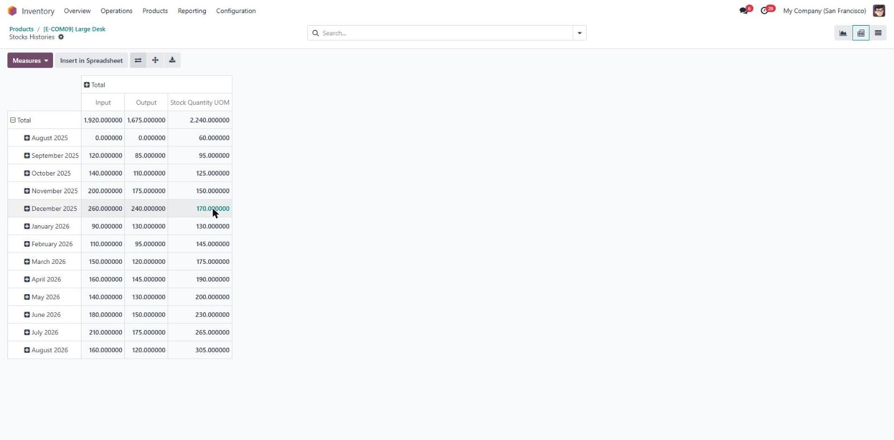
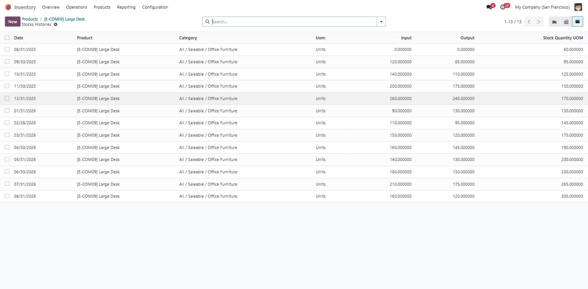
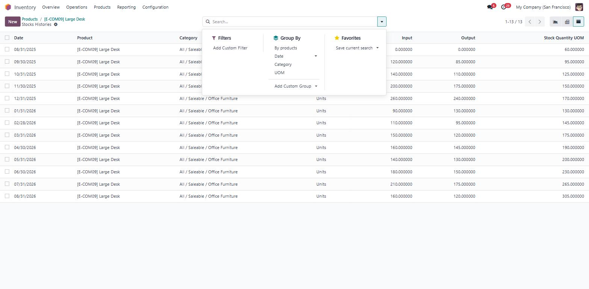
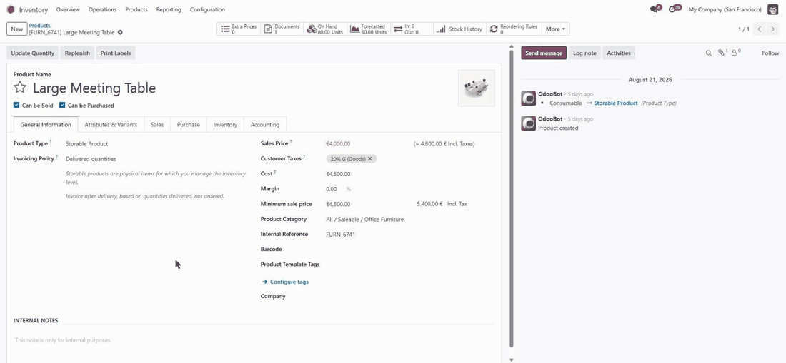
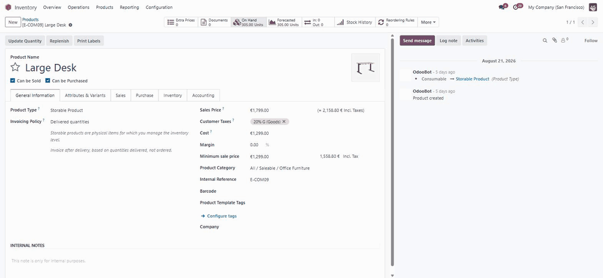

Product History Report · Odoo 17 · Inventory · Free
A year of stock movement for any Odoo product — one click from the product page.
Answering “how did this product actually move last year?” in Odoo means scrolling through stock moves line by line.
Product History Report is a free Odoo 17 module that adds a Stock History button to every product form. One click gives you twelve months of stock in, stock out and quantity on hand — as a chart, a pivot or a list, built from the stock moves already sitting in your database. No setup, no new data to maintain, no subscription.

Product form → Stock History → twelve months of movement. No menu to find, no filter to build.
See it
One button, and then the whole year
Five screens of the Odoo 17 stock history report, exactly as it installs. No theme, no custom view, nothing else to buy.

It lives where you already are. The button sits in the product's own button bar, right after Odoo's stock buttons. Open a product, press it — that is the entire workflow.

The report opens on the chart. One bar per month across the last year, showing the quantity on hand at each month's close — hover a bar and it gives you the exact figure. A seasonal pattern you would never spot in a list of stock moves is obvious here in a couple of seconds.

Switch to the pivot when you want the numbers. Every month a row, stock in, stock out and quantity on hand as columns, and a total line across the whole year. Odoo's own download button sends the table straight to a spreadsheet.

Or read it as plain rows. Date, product, category, unit of measure, input, output, quantity — one row per month, ready to copy into a report or an e-mail.

Regroup it without leaving the screen. Group by product, by date, by product category or by unit of measure, and filter on the date field — all through Odoo's standard search panel.
What is in it
Fourteen things it does, stated plainly
Every line below is a behaviour of the module as shipped in 17.0.1.0.0. Nothing here is planned, optional or on a roadmap.
A Stock History button on every product
Added to the product form next to Odoo's own stock buttons. One click, no menu to hunt for.
Twelve months, month by month
One row per month, dated on the month's last day, from twelve months before the current month up to today.
Stock in, per month
The quantity that arrived into one of your internal locations that month, summed for you.
Stock out, per month
The quantity that left an internal location that month — deliveries, consumption, scrap, transfers out.
Quantity on hand, carried forward
Each month closes with a running total, so the line shows the level of stock over time rather than a set of unrelated bars.
A correct starting point
Everything older than the window is folded into a single opening figure, so the quantity line starts from your real stock level, not from zero.
Graph view
A monthly bar chart, opened by default, using Odoo's standard graph widget.
Pivot view with three measures
Input, Output and Stock Quantity as measures with months in columns — and Odoo's spreadsheet export on top.
List view
The same months as rows, with date, product, category, unit of measure, input, output and quantity.
Group and filter as usual
Group by product, date, product category or unit of measure; filter on the date field. Standard Odoo search panel, nothing new to learn.
Completed moves only
Draft, waiting and cancelled transfers are ignored, so the history matches what really happened.
Multi-company aware
Only the companies switched on in your session are counted. Change the company selector, reopen the report, the figures follow.
Category and unit on every row
The product's category and unit of measure travel with the data, so grouped totals stay meaningful.
Nothing to configure
No settings page, no menu to build, no scheduled job, no third-party library. Install it and the button is there.
Free module, real people behind it
Not sure it fits your Odoo? Ask before you install.
Tell us your version, how you use Inventory, and what you are trying to see. We will tell you plainly whether this module answers it — and if it does not, what would.
Book a walkthrough
We open the report on a real Odoo and answer as we go.
Message us on WhatsApp
Reach the team directly on +62 821-3120-5030.
hub.doodex.netScan a code with your phone, or type the address printed under it — both reach the same place.
Where it earns its place
Four questions this answers in seconds
None of these need a new report, a spreadsheet export or a developer. They need one button on the product you are already looking at.

“Is this product still moving?”
A flat output line across twelve months is a slow mover you are paying to store. Check it before the next purchase order goes out, not after the stocktake.

“When does demand peak?”
Twelve months side by side make the season obvious. Order ahead of the peak instead of reacting to it, and stop tying up cash in the quiet months.

“Does this on-hand figure make sense?”
When a quantity looks wrong, the running line shows you the month it went wrong — so you go straight to that period's moves instead of scrolling through a year of them.

“Whose numbers am I looking at?”
On a multi-company database the report follows the companies switched on in your session, so a group controller and a single-site manager both see figures that belong to them.
Odoo already stores every move you need. It just never adds them up per month, per product, on one screen.
That is the whole gap this module closes — and why it is free.
Why install it
Three reasons it is worth the two minutes
The module costs nothing, so the only real question is whether an Odoo stock history report earns a place on your database. Here is the honest case.
It answers the question where you ask it
Stock questions start on a product, not in a reporting menu. The Stock History button sits on the product form, so the year is one click from where you already are — no report to build, no filter to set, nothing to remember next time.
The figures are yours, read live
Nothing is copied into a new table, cached, or synced overnight. Every month is summed from the completed stock moves in your own Odoo database at the moment you press the button, so the report cannot drift out of step with your warehouse.
Nothing to lose if it turns out not to suit you
It reads and never writes: no settings to configure, no fields added to your records, no third-party service called. Uninstall it and the button disappears, leaving your stock moves exactly as they were. Eight automated tests ship with the source, under LGPL-3.
Install it, open a product, press the button. If the answer is not useful within ten seconds, uninstall it — you are out two minutes and nothing else.
Before you install
What it does not do
We would rather you read this now than discover it later. Nothing below is a fault to be fixed — it is the shape of the module.
It reports one product at a time
The report opens from a product form and covers that product. There is no menu that lines every product up side by side.
Internal transfers count on both sides
A move between two of your own internal locations is recorded as an input and an output on the same date. The Stock Quantity line is unaffected — the two cancel out — but if you shuffle a lot of stock between your own locations, read Input and Output as total warehouse activity rather than as pure receipts and deliveries.
Quantities, not values
Everything is expressed in the product's unit of measure. There is no cost, margin or valuation column; Odoo's Inventory Valuation already does that job.
Built fresh on each click
The report is generated from your stock moves the moment you press the button, for the product you pressed it on. It is designed for looking at one product at a time rather than for many people generating it in the same second.
Odoo 17.0
This listing is the 17.0 build. If you need it on another version, write to us and we will tell you honestly what it takes.
Requirements
What it needs, and what it touches
Odoo version
17.0 — Community or Enterprise
Depends on
base and stock (Inventory).
Nothing else.
Third-party libraries
None. No pip install, no API key, no account.
Install
Copy to your addons folder, update the apps list, install. Then open any product.
Hosting
Odoo.sh and self-hosted. Odoo Online (SaaS) does not accept Apps Store modules.
Configuration
None. There is no settings screen and no menu item to create.
Who can see it
Any internal user who can open a product form.
Your data
Read-only. Nothing is sent anywhere, no external service is called.
Uninstall
Removes the button and the report. Your stock moves are untouched.
Language
English. Labels follow Odoo's own Inventory vocabulary.
Mobile
Uses Odoo's standard graph, pivot and list views, so it behaves as they do.
Licence
LGPL-3. Source included, yours to read and adapt.
FAQ
Fourteen questions buyers actually ask
Written from the questions we get by e-mail. Where the honest answer is “no”, it says no.
Is it really free?
Yes. It is published under LGPL-3 at no cost. There is no paid edition, no licence key, no record limit and no trial that expires. The source ships with the module.
Where do I find the report once it is installed?
Inventory → Products → open any product. The Stock History button is in the row of buttons at the top right of the product form, beside Odoo's own stock buttons. There is no new menu, because the report only makes sense for a product you have chosen.
Which Odoo versions does it work with?
This is the 17.0 build, and it works on both
Community and Enterprise. It depends only on
base and stock, so nothing
else has to be installed first.
Can I use it on Odoo Online?
No — Odoo Online (the SaaS offering) does not allow modules from the Apps Store. Odoo.sh and any self-hosted installation are fine.
Do I have to configure anything after installing?
No. There is no settings page, no menu to create, no access group to assign and no scheduled job to enable. Install it, open a product, press the button.
How far back does the history go?
Twelve months, counted from the first day of the current month. Anything older than that window is folded into a single opening figure so the running quantity starts from your real stock level rather than from zero.
Where do the numbers come from?
From the completed stock moves already in your database. Nothing is duplicated into a new table and nothing is recalculated overnight — the report is read from your existing data at the moment you open it, so it can never drift out of date.
Why is Input higher than my actual receipts?
Because a transfer between two of your own internal locations counts as an input and an output on the same date. The Stock Quantity line is not affected, since the two cancel each other out. If internal transfers are a big part of your operation, read Input and Output as total warehouse activity rather than as pure receipts and deliveries.
Does it show stock value or cost?
No. It reports quantities in the product's unit of measure. For values, margins and costing, Odoo's own Inventory Valuation is the right tool — this module is deliberately about movement, not money.
Does it respect multi-company?
Yes. Only the companies switched on in your session are counted. Change the company selector and reopen the report, and the figures follow your selection.
Can I export the figures?
Yes. The pivot view carries Odoo's standard spreadsheet download, and the list view supports Odoo's normal export. The module adds no export of its own because it does not need to.
Will it change or slow down my database?
It only reads. It creates no new stock data, modifies no move and adds no field to your existing records. Uninstalling removes the button and the report and leaves your stock moves exactly as they were.
Has it been tested?
Yes. The module ships with automated integration
tests that run against a clean Odoo 17 database —
eight of them, covering the monthly grouping, the
opening balance, the input and output rules and the
multi-company scoping. They live in the module's
tests folder, so you can run them
yourself.
I need it on another Odoo version, or with extra columns. Can you do that?
Very likely. Doodex builds and maintains custom Odoo modules — that is our day job, and this one came out of it. Tell us the version and what you need to see, and you will get a straight answer about whether it is a small change or a real project. Write to odoo@doodex.net.
Works great with
Other Doodex modules, built the same way
Different problems, same approach: narrow scope, a one-time price and the limits stated up front. Each one installs on its own.
Doodex Growth Suite
Five CRM and marketing modules that do share one another's data: BizScan AI, Campaign Manager, Smart Dashboards, User Roles and Email Sync+. Sold as one suite.
Open on the Apps Store →Flow Survey Reader
Publish conditional surveys and forms straight from Odoo and keep every answer in your own database.
Open on the Apps Store →Flow Survey Builder
The drag-and-drop editor for those surveys: 25 question types, slide branching and full theming.
Open on the Apps Store →Releases
Public release history
Every version we publish is listed here, newest first, with what changed. If a line is not on this list, it did not ship.
First public release. Adds the Stock History button to the product form; monthly report of stock in, stock out and running quantity over the last twelve months; graph, pivot and list views; grouping by product, date, product category and unit of measure; opening-balance aggregation for periods older than the window; multi-company scoping to the companies active in the session. Ships with eight automated integration tests.
Found something that looks wrong, or need a change? Write to odoo@doodex.net — reported issues get an answer, and fixes appear on this list.
It is free — the only cost is a minute of your time
Install it, open a product, and see the year.
Download it from this page and press the Stock History button on any product. If anything is unclear, or you want it shown on your own Odoo first, all three doors below reach the same team.
Book a walkthrough
We open the report on a live Odoo and answer as we go.
E-mail the team
Questions, bug reports and version requests all land here.
WhatsApp us
Reach the team directly on +62 821-3120-5030.
hub.doodex.netScan a code with your phone, or type the address printed under it — both reach the same place.